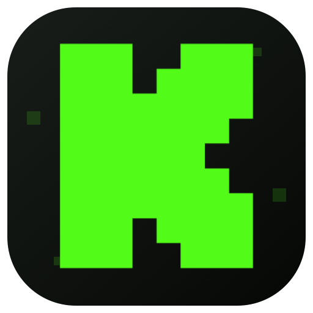

KICK TVSamsung Tizen Edition
AVPlay připraven
LIVE STREAMING
Živě. Pohodlně.
Na velké obrazovce.
Najdi kanál, spusť stream a ovládej kvalitu i chat jediným ovladačem.
⚡ Nativní AVPlay● Živý chat + 7TV⌁ Bez telefonu
01
Najít stream
Stačí část názvu nebo celá adresa kanálu
TIPZ textového pole odejdeš šipkou → nebo ↓